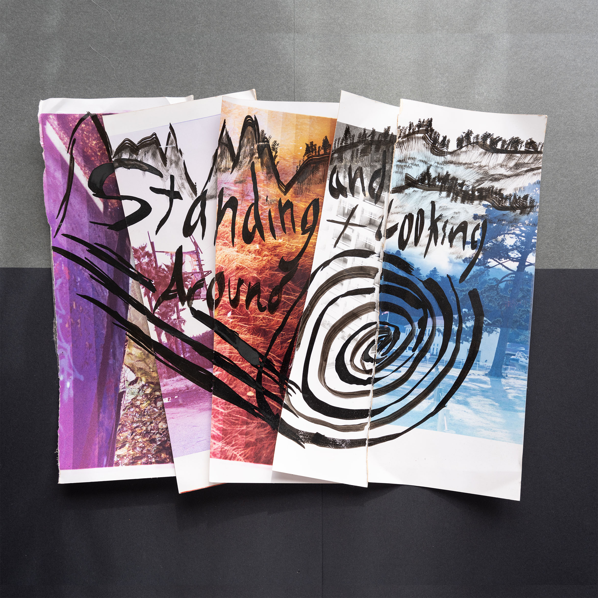
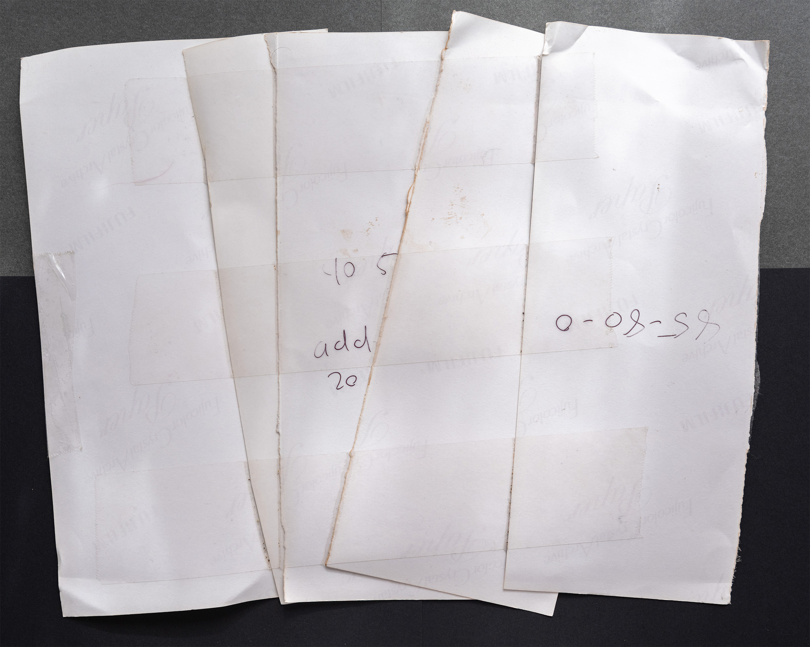

Standing and Looking Around Nameplate
Artifact
Documentation


Metadata
Archive Notes
Creator Commentary
Around November 2023, I was going to play my first show, so I made a little nameplate because I didn't want to tell people that I was Standing and Looking Around. I didn't want to announce the band name or the project name because it felt kind of dumb, but it was something goofy that I was doing, and I really liked it.
For the most part, this was kind of a little collection of different test strips I had from photography school, and I put them together into a little collage that was kind of indicative of the color scheme that I liked for the project. It was really cute. I think it's something that I want to use again.
At the time, I put it on the back of a DIY build-a-dragon-yourself kit made out of 3D-cut wood, and I never built it. I still haven't built it. It's just kind of sitting somewhere in my house now.
This was a fun thing to have around when I did have it around. I'm very pro putting your band name up when you play something.